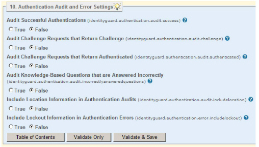

|
IdentityGuard Server 12.0 Administration Guide |
|
IdentityGuard Server 12.0 Administration Guide |
Entrust IdentityGuard provides a way to audit authentication operations, especially those dealing with risk-based authentication. (For more information, see Risk-based authentication overview.) By default, all Entrust IdentityGuard authentication audits are disabled (set to False). You can enable authentication audits using the Properties Editor.
To change authentication audit properties
1. Start the Entrust IdentityGuard Properties Editor. (See Log in or out of the Properties Editor.)
2. On the Table of Contents, click Authentication Audit and Error Settings. (See Authentication Audit and Error Settings for property descriptions.)
3. To have audit messages written when a user successfully authenticates using any authentication method, set Audit Successful Authentications to True.
4. To have audit messages written when your risk-based authentication policies issue a second-factor authentication challenge, set Audit Challenge Requests That Return Challenge to True.
5. To have audit messages written when your risk-based authentication policies authenticate a user without issuing a second-factor authentication challenge, set Audit Challenge Requests That Return Authenticated to True.
6. To have audit messages written when users incorrectly answer knowledge-based questions, set Audit Knowledge-Based Questions That Are Answered Incorrectly to True.
7. To include IP location information (when available) in audit messages related to risk-based authentication, set Include Location Information In Authentication Audits to True.
8. To include lockout information (when available) in errors returned for risk-based authentication, set Include Lockout Information in Authentication Errors to True.
9. Click Validate & Save.
